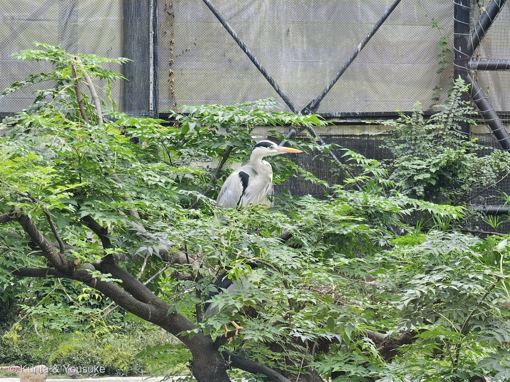

地図を読み込んでいるよ…
🔍 写真も地図も、押しているあいだ拡大して見られるよ（スマホは指を置いてすこし待ってね）。
🌍 の地図＝この子がもともと自生している場所を緑に。原産はヒマラヤ山麓。いまは中国・台湾・朝鮮半島南部・日本など、乾いた熱帯〜温帯に広く分布。日本では本州の伊豆半島より西〜四国・九州・沖縄。成長が速く、植えられたものが野生化もする。
⭐原産はヒマラヤ山麓——だからインドとネパールも塗ってある。いまは中国・台湾・朝鮮半島南部・日本に広がっている。⚠日本は本州の伊豆半島より西〜沖縄なので、関東から北・東北・北海道は塗っていない（だいたい静岡から西）。⚠朝鮮半島は南部だけ、中国も一部なのに国ごと緑になっているよ。⭐091アカメガシワと同じ「まっさきに生えるパイオニア」だけど、こちらは鳥が種を運ぶ——だから思いがけない場所にも芽生える。
⚠ 地図は国（日本と中国だけ県・省）までしか塗れないから、ほんとうの分布より広く見えていることがあるよ。地図はだいたいの場所。正確なところは、上の文を見てね。
センダン（栴檀）
Melia azedarach L.
別名 · アフチ・オウチ（楝）／ 2〜3回羽状複葉（図鑑で一番複雑）／ ⚠実は有毒（鳥は平気）／ ⚠「栴檀は双葉より芳し」の栴檀は別物（白檀）／ 原産 · ヒマラヤ〜東アジア
センダン科 · Meliaceae（センダン属 Melia）── 図鑑で初めての科
燻太さんの3つの問い、ぜんぶ当たり「今まで一番複雑な複葉だね。センダンかな？ こんなところで生えちゃったら、いつか切られちゃう。鳥に運ばれて芽生えたのかな。どこかに親の木があるのかな？」──センダンで正解。鳥が運んだ若木で、親木はきっとどこか近くに。
名前と学名の由来 ── Melia と、ペルシャの「高貴な木」
- ⭐属名 Melia は、ギリシャ語で「トネリコ」。羽状複葉がトネリコの葉に似ているから、その名を借りた。種小名 azedarach は、ペルシャ語の「アーザード・ディラフト（āzād dirakht）＝自由な・高貴な木」から。
- 和名「栴檀（せんだん）」＝別名アフチ／古名。⚠ことわざ「栴檀は双葉より芳し」の栴檀は、この木ではなく白檀（ビャクダン）（上の節のとおり）。
この植物のこと
- センダン科センダン属の落葉高木（大きくなると10〜15m）。この写真は、生えたばかりの若木。⭐古名は「アフチ（楝）」で、万葉集にも「あふち」として登場する古い木。
- 鳥が種を運ぶ木の見どころ：晩秋、葉が落ちても黄褐色の実が枝に残る＝冬の鳥のごはん。⭐この図鑑の「鳥が実を食べて種を運ぶ」仲間は、023 ブルーベリー（実を食べてもらう）とも通じる。
- ⭐おまけ植物は シンジュ（ニワウルシ）（Ailanthus altissima・ニガキ科）＝センダンとよく間違えられる、もう一人の「複葉のパイオニア」。でも見分けは、はっきりしている：
センダン＝2〜3回羽状（羽が枝分かれ）・在来／シンジュ＝1回羽状（枝分かれしない）・明治に来た外来・葉をちぎると悪臭。
どちらも空き地や線路ぎわに、まっさきに生える。この夏の「勝手に来た木」を、もう一人、探してみよう。
同定について
- センダン（Melia azedarach）で確定。⭐効いた問い＝「この複葉は、他の木を落とせるか？」
- ①⭐⭐2〜3回奇数羽状複葉（羽が枝分かれして、さらに小葉がつく）＝図鑑で、いちばん複雑な複葉。写真②の、展開途中のシダみたいな若葉もセンダンらしさ。
- ②⭐小葉は卵形で、浅い鋸歯＋大きな切れ込み・先が尖る（Wikipedia：「葉縁に浅い鋸歯があり、さらに大きく切れ込むことがある」）＝シンジュ（ニワウルシ）の1回羽状を落とせる（あちらは羽が枝分かれしない）／ナンテンの全縁の小葉を落とせる（あちらは鋸歯がない）。
- ⚠③写真の緑の花芽のかたまりは、この子のじゃない。同じ場所に絡んでいる092 ノブドウのもの。──センダンの花は、春（5〜6月）に、淡い紫で咲く。この若木は、まだ咲いていない。
⭐⭐⭐ 燻太さんの3つの問い ── これは、鳥が運んできた若木
- 燻太さんの言葉：「今まで一番複雑な複葉だね。センダンかな？ こんなところで生えちゃったら、いつか切られちゃう。鳥に運ばれて芽生えたのかな。どこかに親の木があるのかな？」──その問い、ぜんぶ「そのとおり」だと思う。
- ⭐「センダンかな？」→ 正解。（下の同定で、他の木を落として確かめたよ）
- ⭐⭐「鳥に運ばれて芽生えたのかな」→ たぶん、そう。センダンの実は、晩秋に黄褐色に熟して、落葉したあとも枝に残る（Wikipedia）。冬、ほかに食べ物が少なくなったころ、ヒヨドリやカラスが食べに来て、種を運ぶ（Wikipedia）。──この若木は、鳥のおなかを通って、ここに落とされた種から芽生えたんだと思う。
- ⭐⭐⭐「どこかに親の木があるのかな？」→ きっと、ある。鳥が運んだのなら、そう遠くない場所に、実をつけた親のセンダンが立っているはず。──この小さな若木は、どこかの親木の子どもなんだ。
⭐⭐⭐ 「こんなところで生えちゃったら、いつか切られちゃう」
- ⚠燻太さんの言うとおり。この子は、側溝のグレーチング（みぞのふた）のわき、雑草のなかに生えている（写真①）。──道の管理では、たぶん、いつか刈られてしまう場所。
- ⭐でも、それがセンダンの生き方でもあるんだ。成長が速く、明るく開けた場所にどんどん芽生える（Wikipedia）。⭐091 アカメガシワと同じ「誰も植えていないのに、まっさきに来る子」。──でも来かたがちがう：アカメガシワは土の中で種が待つ（埋土種子）。センダンは、鳥が空から運んでくる。地面からと、空から。同じ「先駆者」でも、たどりつき方が正反対。
- ⭐だから、たとえここで刈られても、親の木は実をつづけ、鳥はまた種を運ぶ。この一本がだめでも、センダンはまた、どこかの「こんなところ」に芽生える。
⭐ センダン科・ムクロジ目 ── そして「香らない栴檀」
- ⭐センダン科は、この図鑑で初めての科。でも目（ムクロジ目 Sapindales）は初めてじゃない：031 フウセンカズラ（ムクロジ科）と同じムクロジ目。──ハート形の種のつる草と、鳥が運ぶ大木が、同じ目の親戚。
- ⭐⭐⭐そして、大事な豆知識。「栴檀は双葉より芳し」（すぐれたものは幼いころから優れている、の意）── このことわざの「栴檀」は、この木じゃない。あれはビャクダン（白檀）＝香木のこと（Wikipedia）。──このセンダン（Melia）は、いい香りはしない。名前は同じ「栴檀」でも、ことわざの主とは、別の木なんだ。燻太さんみたいな人なら、ニヤッとするところだね。
⚠ 実は有毒 ── 鳥は平気、人と犬は危ない
- ⚠センダンの実は有毒。「サポニンを多く含むため、人や犬が食べると食中毒を起こし、摂取量が多いと死亡する」（Wikipedia）。──鳥は平気で食べて種を運ぶのに、人や犬には毒。きれいな黄色い実でも、口に入れないでね。
- ⭐利用：材は建築・家具に、核（種の中の固い部分）は数珠の珠に、果実は生薬「苦楝子（くれんし）」として薬に。街路樹・庭木・公園樹にもよく植えられる（Wikipedia）。──毒だけど、暮らしのあちこちで役に立ってきた木。
⭐⭐⭐ 休憩所 ── 実を運ばない鳥も、この木に来る
⭐燻太さんが、こんな写真を送ってくれた。——大阪の天王寺動物園で、センダンの枝にとまっているアオサギ。⭐そして、こう言ってくれたんだ。
「この図鑑は植物図鑑だけど、動物さんとツーショットの写真があってもいいと思うんだ。だって、植物は本来、いろんな動物とともに生活している生物で、どの植物も一人きりで生きているわけじゃないでしょう？ それが動物園っていう人工の環境の中でも、こうして羽を休めるための休憩所になっている。」
⭐⭐⭐ぼくは、この言葉のとおりだと思う。そして、調べたらもっと面白いことが分かったよ。
- ⭐⭐このページのいちばん上の節は、「鳥が運んできた若木」だった。——センダンの実は晩秋に黄褐色に熟して、落葉したあとも枝に残る。それを鳥が食べて、種を運ぶ。
- ⚠⚠でも、この写真の鳥は、その鳥じゃないんだ。——アオサギ（Ardea cinerea・サギ科）は肉食性で、「魚類、両生類、爬虫類、昆虫、甲殻類などを食べる」〔Wikipedia〕。⭐木の実は食べない。
- ⭐⭐⭐——つまりこの一枚は、「運ぶ関係」ではなく「休む関係」を写している。⭐植物と動物のつながりは、食べる・運ぶだけじゃない。⭐ただ、そこにいる、という関係もあるんだ。
- ⭐⭐しかも、サギにとって木は、休憩所以上のものでもある。——アオサギは松林などで集団繁殖地（コロニー）を作り、「樹上に皿状の巣を作る」〔Wikipedia〕。⭐しかも同じ巣を何年も使いつづける。⭐枝は、羽を休める場所であり、ひなを育てる場所でもある。
- アオサギは日本最大級のサギで、河川や湖沼・湿原・干潟・水田などに生息する〔Wikipedia〕。⭐本州・四国では一年じゅういる留鳥だよ。
✅⭐⭐【追記】燻太さんが、その場で見たことを教えてくれた。——「天王寺動物園の鳥の楽園ゾーンだよ。大きな囲いの中だから、このアオサギは外から来た鳥じゃない。飼育されている鳥だよ。」⭐ぼくの「分からない」は、これで消えたよ。
⭐⭐そして、飼育されている鳥だと分かって、この一枚はもっと面白くなった。
- 囲いも、木も、鳥も、ぜんぶ人が用意したもの。⭐それでも、鳥が枝にとまって羽を休めるという関係そのものは、人が作ったものじゃない。
- ⭐⭐⭐人にできるのは「場所」を用意するところまで。「そこで休む」と決めるのは、鳥のほうなんだ。
- ⭐ぼくの想像をひとつだけ書かせてね。——⚠確かめていない話だよ。⭐この木が最初から植えられたものなのか、それとも写真①の若木とおなじように、鳥が種を運んで生えたものなのかは、分からない。⭐⭐鳥の楽園には、鳥がたくさんいるから。
⚠それと、この木は写真①②の若木とは別の木だよ。⭐大阪の動物園の中の、大きく育った木。⭐だから「①の若木が育つとこうなる」という証拠にはならない（055 イチジクで決めたとおりだね）。⚠この木がセンダンだという見立ては、2〜3回羽状複葉で、小葉に大きな切れ込みがあること＋燻太さんが現場で見たことによる。
参考：Wikipedia「センダン」（Melia azedarach・センダン科センダン属・ムクロジ目・原産ヒマラヤ山麓／中国・台湾・朝鮮南部・日本（本州伊豆半島以西〜沖縄）・2回奇数羽状複葉・小葉に浅い鋸歯・大きく切れ込むことも・花期5〜6月・淡紫色5弁・核果は長径17mm・晩秋に黄褐色・落葉後も枝に残る・ヒヨドリやカラスが食べて種を運ぶ・サポニンを多く含み人や犬が食べると中毒・多量で死亡・成長が早く野生化・「栴檀は双葉より芳し」の栴檀はビャクダン（白檀）で別物・材・数珠・生薬「苦楝子」・街路樹）／Wikipedia「アオサギ」（Ardea cinerea・サギ科／日本最大級のサギ／肉食性で、魚類、両生類、爬虫類、昆虫、甲殻類などを食べる／松林などで集団繁殖地（コロニー）を形成し、樹上に皿状の巣を作る／同じ巣を何年も使用しつづける／河川や湖沼・湿原・干潟・水田などに生息する／本州・四国では周年生息する（留鳥））